무선설비기사 (2022-03-12 기출문제)
1과목: 디지털 전자회로
1. 정류회로 출력 성분 중 교류인 리플을 제거하기 위해 정류회로 다음 단에 접속되는 회로는 무엇인가?
- 평활회로
- 클램핑회로
- 정전압회로
- 클리핑회로
(정답률: 93%)

2. 다음과 같은 회로의 입력에 120[Vrms], 60[Hz] 정현파 신호가 인가 되었을 때. 출력에서 리플전압의 피크-피크값은 약 몇[V]인가? (단, 다이오드에 걸리는 전압강하는 무시한다.)
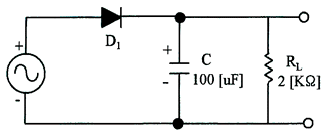
- 11.57[V]
- 12.57[V]
- 13.57[V]
- 14.57[V]
(정답률: 69%)
3. 다음은 트랜지스터 직렬전압안정회로를 나타내었다. 부하전압을 5[V]로 유지하기 위한 제너다이오드의 항복전압은 얼마인가? (단, 트랜지스터의 베이스-이미터 전압 VBE = 0.7[V]이고, 입력전압 Vin = 10[V]~20[V]까지 변한다고 가정한다.)
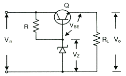
- 5[V]
- 5.7[V]
- 10[V]
- 10.5[V]
(정답률: 87%)
4. 다음 중 증폭기에 대한 설명으로 옳은 것은?
- 입력신호의 에너지를 증가시켜 출력 측에 큰 에너지의 변화로 출력하는 회로이다.
- 출력 내에 포함되어 있는 리플성분을 제거시켜 일정한 크릭의 전압을 유지시키는 회로이다.
- 교류전압을 사용하기 적당한 직류전압으로 변환하여 주는 회로이다.
- 출력부하전류 및 온도에 상관없이 일정한 직류 출력전압을 제공하는 회로이다.
(정답률: 96%)
5. 다음 그림은 하이브리드 4단자망의 등가회로이다. 여기에서 V1을 나타내는 식은?
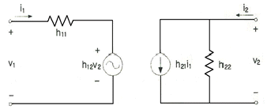
- h12i1 + h11v2
- h21i1 + h22v2
- h22i1 + h21v2
- h11i1 + h12v2
(정답률: 79%)
6. 3단 종속 전압증폭기의 이득이 각각 10배, 20배, 50배일때 종합증폭도와 종합이득은 각각 얼마인가?
- 종합증폭도는 10배, 종합이득은 20[dB]
- 종합증폭도는 100배, 종합이득은 40[dB]
- 종합증폭도는 1,000배, 종합이득은 60[dB]
- 종합증폭도는 10,000배, 종합이득은 80[dB]
(정답률: 87%)
7. 다음 중 부궤환 조건으로 옳은 것은? (단, A : 무궤환시 증폭기 이득, β : 궤환율이다.)
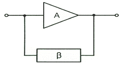
- (1 + βA)2 ＞ 1
- (1 + βA) ＞ 1
- (1 + βA) ＜ 1
- (1 + βA)2 ＜ 1
(정답률: 69%)
8. 다음 중 연산증폭기의 응용회로가 아닌 것은?
- 부호변환기
- 배수기
- 교류전류 플로워
- 전압-전류 변환기
(정답률: 86%)
9. 다음 증폭기 회로에서 최대 전력 소비 정격은 약 얼마인가?
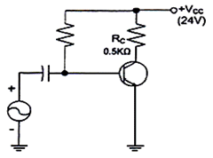
- 0.1[W]
- 0.3[w]
- 0.5[W]
- 1.0[W]
(정답률: 50%)
10. 다음 비정현파 발진회로의 (가)와 (나)에서의 출력을 바르게 나타낸 것은?
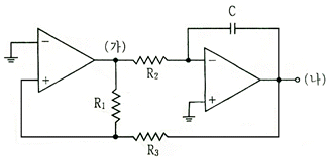
- (가) 임펄스, (나) 계단함수
- (가) 구형파, (나) 삼각파
- (가) 계단함수, (나) 임펄스
- (가) 삼각파, (나) 구형파
(정답률: 82%)
11. 다음 그림은 정보 전송 기술에서 어떤 변조 방식의 변조파인가?
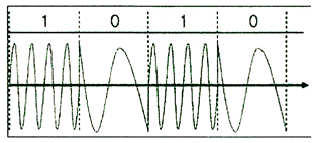
- 진폭 천이 변조
- 주파수 천이 변조
- 폭 천이 변조
- 위상 천이 변조
(정답률: 91%)
12. DPSK 복조에 주로 이용되는 방식은?
- 포락선 검파
- 동기검파
- 비동기식 검파
- 차등위상 검파
(정답률: 70%)
13. 디지털 신호의 정보 내용에 따라 반송파의 위상을 변화시키는 변조방식으로 2진 디지털 신호를 2개씩 묶어 전송하는 QPSK 변조방식의 반송파 위상차는?
- 45[°]
- 90[°]
- 180[°]
- 270[°]
(정답률: 81%)
14. 포스터 실리 검파 회로와 비검파 회로와의 검파 감도 비는?
- 1:3
- 3:1
- 1:2
- 2:1
(정답률: 81%)
15. 다음 그림과 같은 회로의 출겨 파형(Vo)의 형태는?
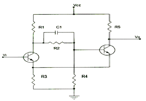
- 사인파
- 삼각파
- 구형파
- 톱니파
(정답률: 81%)
16. 2진수(101101)2을 10진수로 올바르게 표시한 것은?
- 40
- 45
- 50
- 55
(정답률: 93%)
17. 인에이블(Enable) 입력을 가진 해독기(Decoder)는 무엇과 동일한가?
- 플립플롭
- 멀티플렉서
- 디멀티플렉서
- 전가산기
(정답률: 75%)
18. 다음 그림과 같은 회로의 논리 동작으로 맞는 것은?
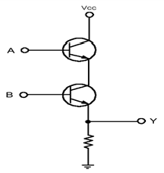
- OR
- AND
- NOR
- NAND
(정답률: 90%)
19. 비동기식 5진 계수회로는 최소 몇 개의 플립플롭이 필요한가?
- 4
- 3
- 2
- 1
(정답률: 92%)
20. 다음 중 동기식 카운터로 이용이 불가능한 것은?
- 리플 계수기
- BCD 계수기
- 2진 계수기
- 2진 업다운 계수기
(정답률: 81%)
2과목: 무선통신 기기
21. 다음 중 SSB수신기가 DSB수신기와 다른 점으로 잘못 기술된 것은?
- 동기식 검파방식에서 SSB수신기가 DSB보다 주파수 및 위상오차에 더 취약하다.
- 조정을 용이하게 하기 위한 스피치 클라이파이어(Speech Clarifier)가 있다.
- 국부발진기가 사용된다.
- 통과 대역폭이 좁은 필터(Filter)를 사용한다.
(정답률: 56%)
22. 다음 중 FM송신기에 사용되는 IDC회로의 기능을 바르게 나타낸 것은?
- 변조신호의 진폭 강화
- 임계현상 억제
- 최대 주파수편이의 규정치 유지
- 도래전파가 없을 때 잡음출력 억제
(정답률: 78%)
23. 다음 그림은 입력신호에서 주파수와 위상을 추출하는 위상동기루프 (PLL)를 나타낸다. 괄호에 들어가는 내용의 조합으로 적절한 것은?
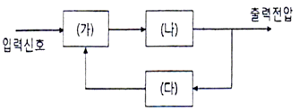
- (가) 위상검출기 (나) 저역통과 필터 (다) 전압제어발진기
- (가) 위상검출기 (나) 전압제어발진기 (다) 저역통과필터
- (가) 전압비교기 (나) 고역통과필터 (다) 전압제어발진기
- (가) 전압비교기 (나) 전압제어발진기 (다) 저역통과필터
(정답률: 83%)
24. 다음 변조신호 스펙트럼 중 전력효율이 가장 좋은 SSB 신호에 해당 하는 것은?
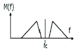
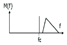
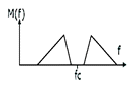
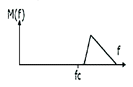
(정답률: 83%)
25. 64[kbps] 이진 PCM 신호를 ISI(심볼간 간섭) 없이 수신할 수 있도록 하는 시스템의 최소대역폭은 얼마인가?
- 8[kHz]
- 16[kHz]
- 32[kHz]
- 64[kHz]
(정답률: 69%)
26. 다음 중 마이크로웨이브 통신이나 밀리미터파를 사용하는 다중 통신에 사용되는 중계방식이 아닌 것은?
- 검파 중계 방식
- 재생 중계 방식
- 무급전 중계방식
- 반파 중계 방식
(정답률: 56%)
27. 100[kbps] 데이터율로 디지털 데이터를 전송할 경우 16-ary QAM의 심볼전송률[sps]은?
- 25[ksps]
- 50[ksps]
- 80[ksps]
- 160[ksps]
(정답률: 86%)
28. 다음 그림과 같이 주어진 신호 s(t)에 대한 정합필터의 임펄스 응답파형은 무엇인가?
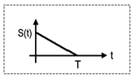
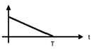
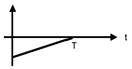
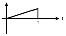
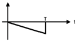
(정답률: 75%)
29. 2진 ASK(Amplitude Shift Keying) 신호의 전송속도가 1,200[bps]이면 보[baud] 속도는 얼마인가?
- 300[baud/초]
- 400[baud/초]
- 600[baud/초]
- 1,200[baud/초]
(정답률: 83%)
30. 다음 중 펄스식 레이다를 널리 사용하는 이유가 아닌 것은?
- 출력의 능률을 올릴 수 있다.
- 저주파로 이용할 수 있기 때문이다.
- 예민한 빔을 얻을 수 있어 방위 분해능을 높게 할 수 있다.
- 송신 펄스의 유지 시간 내에 반사 펄스를 수신할 수 있어 상호 간섭이 없다.
(정답률: 75%)
31. 다음 중 DGPS(Differential Global Positioning System)에 대한 설명으로 틀린 것은?
- 라디오 비컨을 통하여 방송한다.
- 관측 가능한 모든 위성을 모니터링한다.
- DGPS의 정확도는 100[m] 내외이다.
- 관측에 의한 위치와 이미 알고 있는 기준국의 위치를 비교하여 보정값을 산출한다.
(정답률: 73%)
32. 다음 중 GPS(Global Positioning System)를 이용하여 위치 측정 시 발생하는 오차가 아닌 것은?
- 위성 시계의 오차
- 위성 궤도의 오차
- 온도 상승의 오차
- 다중경로 등으로 인한 거리 오차
(정답률: 88%)
33. 다음 중 GPS 코드에 대한 설명으로 틀린 것은?
- P코드는 처음에는 군용이였지만 민간에서도 이용하고 있다.
- 민간용으로는 C/A코드를 사용한다.
- 군용으로는 P코드를 사용한다.
- C/A코드의 정밀도는 10[m] 내외의 정밀도를 갖는다.
(정답률: 84%)
34. 다음은 정류회로에 대한 설명이다. 올바르지 못한 것은?
- 단상 반파 정류회로의 맥동율은 1.21 이다.
- 단상 전파 정류회로의 맥동율은 0.482 이다.
- 브리지형 단상 전파 정류회로는 중간 탭이 없다.
- 브리지형 단상 전파 정류회에는 다이오드 2개가 사용된다.
(정답률: 73%)
35. 단상 전파 정류회로에서 직류 출력 전류의 평균치를 측정하면 어떤 값이 얻어지는가? (단, Im은 입력 교류전류의 최대치이다.)
- Im/2
- Im
- 2 Im/π
- 0.707 Im
(정답률: 79%)
36. 필터법을 이용한 왜율 측정 시 필요하지 않은 구성요소는?
- 저주파 발진기
- 감쇠기
- 저역통과필터
- 미분기
(정답률: 61%)
37. 다음 내용을 나타내는 용어는?
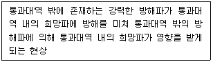
- 스퓨리어스 레스폰스
- 혼변조
- 잡음감도
- 감도 억압효과
(정답률: 78%)
38. 수신기의 전기적 특성 중 일정 출력을 어느 정도 시간까지 유지할 수 있는가의 성능을 나타내는 것으로 맞는 것은?
- 감도
- 안정도
- 충실도
- 선택도
(정답률: 86%)
39. 입력에 고주파 케이블을 사용한 수신기의 감도를 출력임피던스가 50[Ω]인 신호발생기를 사용하여 측정하고자 할 때 수신기의 입력단자에 연결한 방법은?
- 신호발생기와 50[Ω]의 직렬회로로 연결
- 신호발생기만 연결
- 신호발생기와 75[Ω]의 병렬회로로 연결
- 저항 75[Ω] 연결
(정답률: 77%)
40. 안테나의 실효 인덕턴스가 2[μH], 실효 정전용량이 2[pF]일 때 이안테나의 고유 주파수는 약 얼마인가?
- 60[MHz]
- 80[MHz
- 100[MHz]
- 120[MHz]
(정답률: 66%)
3과목: 안테나 공학
41. 다음 중 전자파의 성질에 대한 설명으로 틀린 것은?
- 전자파는 횡파이다.
- 전자파는 편파성이 없다.
- 전계나 자계의 진동방향과 직각인 방향으로 진행하는 파이다.
- 전계와 자계가 서로 얽혀 도와가며 고리모양으로 진행하는 파이다.
(정답률: 82%)
42. 다음 중 전파투시도(Profile Map)에 대한 설명으로 틀린 것은?
- 전파투시도에서 전파 통로는 곡선으로 나타낸다.
- 송수신점을 포함하여 대지와 수직인 지형의 단면도를 나타낸다.
- 전파투시도를 그릴 때 등가지구 반경계수를 고려한다.
- 전파경로상의 수직 장애물의 효과를 연구하는데 유용하다.
(정답률: 66%)
43. 대류권파의 페이딩 생성원인에 의한 분류에 속하는 것으로 옳은 것은?
- 신틸레이션 페이딩
- 동기성 페이딩
- 선택성 페이딩
- 근거리 페이딩
(정답률: 84%)
44. 대지면에 설치된 수직 접지 안테나로부터 지표면을 따라 전파가 진행할 때 감쇠가 적은 순서대로 바르게 배열한 것은?
- 해면, 평지, 산악, 사막
- 사막, 산악, 평지, 해면
- 해면, 사막, 평지, 산악
- 사막, 평지, 산악, 해면
(정답률: 84%)
45. 다음 중 회절계수에 대한 설명으로 틀린 것은?
- 회절계수와 회절손실은 비례한다.
- 전파 통로에 장애물이 있을 때 발생한다.
- 회절효과는 주파수가 낮을수록 크게 나타난다.
- 전파는 회절에 의해 기하학적 음영부분에 도달 할 수 있다.
(정답률: 73%)
46. 다음 중 라디오 덕트에 대한 설명으로 틀린 것은?
- 덕트 내에서 초굴절 현상이 생긴다.
- 가시거리보다 훨씬 먼 거리를 전파할 수 있다.
- 도파관과 같이 차단 주파수 이하의 주파수만 통과시킨다.
- 역전층에 의해 발생한다.
(정답률: 73%)
47. 다음 중 잡음 방해의 개선방법으로 적합하지 않은 것은?
- 수신전력을 크게 한다.
- 수신기의 실효대역을 넓힌다.
- 인공잡음발생을 경감시킨다.
- 적절한 통신방식을 선택한다.
(정답률: 78%)
48. 다음 동축케이블에 관한 설명으로 틀린 것은?
- 외부도체가 차폐역할을 하므로 방사손실이 거의 없다.
- 평형상태는 불 평형이다.
- UHF대 이하의 고정국의 수신용 급전선으로 사용된다.
- 감쇠정수(α)는 주파수(f)에 반비례한다.
(정답률: 74%)
49. 다음 중 정재파에 대한 설명으로 틀린 것은?
- 진행파와 반사파가 합성된 파를 말한다.
- 전압 분포상태가 (λ/2)거리마다 최대치가 있다.
- 전압⦁전류의 위상은 선로상의 각 점에 따라 서로 다르다.
- 진행파와 비교할 때 전송손실이 크다.
(정답률: 79%)
50. 다음 중 동조 급전선과 비동조 급전선에 대한 설명으로 틀린 것은?
- 정재파가 분포되어 있는 급전선을 동조 급전선이라 한다.
- 비동조 급전선은 동조 급전선보다 전력의 손실이 적다.
- 동조 급전선은 거리가 짧을 때, 비동조 급전선은 길 때 주로 사용한다.
- 비동조 급전선은 정합장치가 불필요하다.
(정답률: 84%)
51. 자유공간에서 주파수 15[MHz]의 전파를 방사하는 미소 다이폴안테나로 부터 거리 d[m]인 곳의 복사전계와 유도전계의 세기가 같아졌다면, 이 때의 거리 d는 몇 [m]인가?
- 0.6[m]
- 20[m]
- 3.2[m]
- 6.4[m]
(정답률: 70%)
52. 다음 중 절대이득의 기준 안테나는?
- 무손실 접지 안테나
- 무손실 루프 안테나
- 무손실 등방성 안테나
- 무손실 다이폴 안테나
(정답률: 81%)
53. 다음 중 수평편파 성분의 전파를 수신하지 못하는 안테나는?
- 웨이브 안테나 (Wave Antenna)
- 슬리브 안테나 (Sleeve Antenna)
- 애드콕 안테나 (Adcock Antenna)
- 루우프 안테나 (Loop Antenna)
(정답률: 65%)
54. 어떤 안테나가 자유공간에서, 200[W]의 전력을 방사할 때, 최대 방사방향의 송신점으로부터 50[km] 점에서 전기장 세기가 4[mV/m]이다. 이 안테나의 상대이득은 얼마인가? (단, log2 = 0.3으로 계산한다)
- 3[dB]
- 4[dB]
- 5[dB]
- 6[dB]
(정답률: 63%)
55. 장애전자파 한계치 결정과정에서 주어진 조건으로 수신장해를 방지하기 위해서는 수신 안테나에 유입되는 장해전자파의 크기(Eu)가 얼마보다 작아야 하는가?(조건 : 희망 신호파의 전계강도(Es) = 300[dBuV/m], 혼신보회비(P) = 10[dB])
- 280[dBuV/m]
- 290[dBuV/m]
- 300[dBuV/m]
- 310[dBuV/m]
(정답률: 71%)
56. 반파장 안테나에 10[A] 전류가 흐를 때 500[km] 지점에서 최대 복사 방향에서의 전계강도는 약 얼마인가?
- 10[mV/m]
- 4.3[mV/m]
- 2.1[mV/m]
- 1.2[mV/m]
(정답률: 57%)
57. 다음 중 전자파장해(EMI)에 대한 설명으로 틀린 것은?
- 전자파장해 또는 전자파간섭이라고 하며 전자기기로부터 부수적으로 발생되는 불필요한 전자파가 공간으로 방사된다.
- 전원선을 통해 전도되어 해당기기 자체나 통신망 및 다른 전기 전자기기에 전자기적 장해를 유발시킨다.
- 전자파를 발생시키는 기기가 다른 기기의 성능에 영향을 주지 않도록 전자파가 방사 또는 전도되는 것을 제한한다.
- 전자파보호, 전자파내성 또는 전자파 민감성이라 하며 전자파 방해가 존재하는 환경에서 기기, 장치 또는 시스템이 성능의 저하 없이 동작할 수 있다.
(정답률: 80%)
58. 전자파 인체보호 관련 용어 설명 중 전자파흡수율(SAR)에 대한 설명으로 가장 적합한 것은?
- 전기장 내의 한 점에 있는 단위 양전하에 작용하는 힘
- 생체조직의 단위 질량당 흡수되는 에너지의 비율(W/kg)
- 전자파의 진행 방향에 수직인 단위 면적을 통과하는 전력
- 전자파 인체보호기준에서 정한 전기장의 세기(V/m), 자기장의 세기(A/m), 전력밀도(W/평방미터) 등을 실제 측정
(정답률: 80%)
59. 장중파 안테나에 대한 단파 안테나의 일반적인 특징에 대한 설명으로 틀린 것은?
- 광대역성의 예민한 지향특성을 갖는다.
- 파장이 짧으므로 고유파장의 안테나를 얻기 쉽다.
- 주로 수직편파를 이용하므로, 접지가 불필요하다.
- 복사 효율이 좋고, 반사기 등을 사용할 수 있다.
(정답률: 70%)
60. 안테나 전류를 지선망의 각 분구(分區)에 똑같이 흘려서 안테나 전류가 기저부 근처에 밀집하는 것을 피하여 접지저하의 감소를 도모하는 접지방식은?
- 가상 접지
- 다중 접지
- 심굴 접지
- 방사상 접지
(정답률: 84%)
4과목: 무선통신 시스템
61. 다음 중 AM과 FM의 전송대역폭에 대한 설명으로 틀린것은?
- AM에서는 전송대역이 변조주파수에만 직접적으로 비례한다.
- FM에서는 변조주파수와 변조신호의 진폭에 의해서 전송대역폭이 변한다.
- 복조된 신호는 억제된 해당 주파수성분에서도 영향이 없다.
- FM에서는 가능한 모든 중요한 측파대를 포용 할 숭 있도록 신호처리 해야 한다.
(정답률: 48%)
62. 어느 ADC(Analog-to Digital Converter)가 -5~+5[V]의 입력을 가지며 한 샘플은 4비트로 양자화 된다. 이 경우 발생한 양자화 잡음전력은 얼마인가?
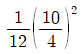
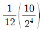
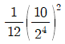
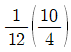
(정답률: 68%)
63. 위성 통신에서 정지 위성 궤도에 대한 설명으로 적합하지 않은 것은?
- 지구 적도 상공 약 35,786[km]에 존재하는 궤도이다.
- 하나의 위성은 궤도상에서 지구표면의 약 50[%] 시각성을 갖는다.
- 지구의 자전주기와 위성의 회전주기가 같은 궤도이다.
- 궤도 1주기는 약 24시간이다.
(정답률: 75%)
64. 다음 중 현재 사용되는 위성 통신용 중계기(Transponder)에서 송신단의 고출력 증폭기로 주로 이용 되는것은?
- TWTA(Traveling Wave Tube Amplifier)
- LNA(Low Noise Amplifier)
- KLYSTRON
- MAGNETRON
(정답률: 68%)
65. 다음 중 이동통신의 지하 및 옥내용 중계기로 적합하지 않은 것은?
- IF 분산중계기
- M/W 중계기
- LCX 중계기
- Femto Cell
(정답률: 68%)
66. PS-LTE 기술적 요구 사항 중 보안관련 기능에 해당하지 않은 것은?
- 호 설정(Call Setup)
- 관한부여(Authorization)
- 인증(Authenentiication)
- 암호화(Encryption)
(정답률: 85%)
67. 다음 중 4세대 무선통신기술인 LTE(Long Term Evolution)를 철도환경에 최적화하여 음성, 데이터 및 영상서비를 제공하고, 긴급 상황 발생 시 즉각적이고, 효과적인 대응이 가능한 통신기술은?
- VHF / UHF
- TETRA
- LTE-R
- LTE-U
(정답률: 81%)
68. 양방향 방송 서비스에서 제공되는 실시간 VOD(Video On Demand)에 사용되는 네트워크 방식은?
- Unicast
- Anycast
- Multicast
- Broadcast
(정답률: 62%)
69. 다음 중 무선 LAN의 장점이 아닌 것은?
- 근거리 통신 속도는 유선 LAN에 비하여 빠른 편이다.
- Network 구축 시 설치비용과 설치시간이 절감된다.
- Layout 변경이나 확장 시 Hub나 케이블 작업이 불필요하다.
- 이동성으로 인한 응용범위가 광범위하다.
(정답률: 88%)
70. 다음 통신 기술 중 64QAM 변조방식을 사용하는 기술은 무엇인가?
- Bluetooth
- HomeRF
- UWB
- WiFi
(정답률: 69%)
71. 무선 근거리 통신망의 ISM 대역에 대한 설명으로 적합하지 않은 것은?
- ISM 대역은 ITU에서 국제적으로 지정하였다.
- 산업⦁과학⦁의료 대역이라 불리는 주파수 대역이다.
- 한국은 제3지역에 해당하는 주파수 대역을 사용한다.
- ISM 대역을 사용하기 위해서는 별도의 무선국 허가가 필요하다.
(정답률: 81%)
72. 다음 중 100Mbps 이상의 전송속도를 제공한 무선 LAN의 표준은?
- IEEE 802.11a
- IEEE 802.11b
- IEEE 802.11g
- IEEE 802.11n
(정답률: 69%)
73. 무선 LAN에서 단말기 상호 간 무선구간에서의 충돌 방지를 위해 사용하고 있는 MAC방식은?
- CSMA/CD
- CSMA/CA
- TOKEN BUS
- TOKEN RING
(정답률: 85%)
74. 다음 중 프로토콜(Protocol) 기능의 하나인 순서결정(Sequencing)으로 맞는 것은?
- 각 계층의 프로토콜에 적합한 데이터 블록으로 만들고 헤더를 부착하는 기능
- 통신 개시에 앞서 논리적인 통신 경로인 데이터 링크를 설정하고 순서에 맞는 흐름 제어 및 에러제어를 결정하는 기능
- 송수신측의 주소를 명시하여 정확한 목적지에 데이터가 전달되게 하는 기능
- 연결 설정, 데이터 전송, 연결 해제의 기능
(정답률: 80%)
75. 하위 계층을 사용하여 응용 프로그램간의 통신에 대한 제어 기능을 수행하며, 상호 대응하는 응용프로그램 간의 연결의 개시, 관리, 종결을 담당하는 계층은?
- 응용 계층
- 표현 계층
- 세션 계층
- 전달 계층
(정답률: 78%)
76. 대한민국 지상파 디지털TV 전송방식의 한 채널당 대역폭은?
- 3[MHz]
- 4[MHz]
- 5[MHz]
- 6[MHz]
(정답률: 71%)
77. 다음 중 무선통신 실시설계의 산출물로 적합하지 않은 것은?
- 공사비 산출서
- 설계 계획서
- 실시설계 설계도서
- 전송용량 계산서
(정답률: 75%)
78. 다음 중 장비의 단위시험 결과 보고서를 작성할 때 포함되는 항목으로 거리가 먼것은?
- 펌웨어 업데이트
- 시험결과 분석
- 측정자
- 시험 측정방법
(정답률: 87%)
79. 전력계로 송신기의 출력을 측정하였더니 0.1[W]가 측정되었다면 출력은 몇 [dBm]인가?
- 0.1
- 1
- 10
- 20
(정답률: 69%)
80. 다음 스펙트럼분석기의 파형에서 Spurious Emisson의 대역은?
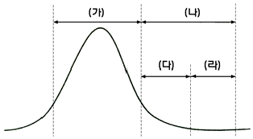
- (가)
- (나)
- (다)
- (라)
(정답률: 67%)
5과목: 전자계산기 일반 및 무선설비기준
81. 다음 중 DMA(Direct Memory Access) 제어방식에 대한 설명으로 틀린 것은?
- DMA 장치가 입출력 동작을 수행할 때 CPU는 주 프로그램을 수행하므로 입출력 전송에 따른 CPU의 부하를 줄일수 있다.
- DMA 장치는 블록으로 대용량의 데이터를 전송을 할 수 있다.
- 직접 제어방식보다는 고속으로 데이터 전송을 할 수 있다.
- DMA장치와 CPU가 주기억장치를 동시에 사용할 떼는 DMA장치의 우선 순위가 낮으므로 CPU가 주기억 장치를 접근하며, 이 경우 DMA 장치의 동작은 중지된다.
(정답률: 64%)
82. 대기하고 있는 프로세스 p1, p2, p3, p4의 처리시간은 24[ms], 9[ms], 15[ms], 10[ms]일 때, 최단 작업 우선 (SJF)스케쥴링으로 처리했을 때, 평균 대기 시간은 얼마인가?
- 8.5 [ms]
- 14.5 [ms]
- 15.5 [ms]
- 25.25 [ms]
(정답률: 72%)
83. OSI 계층 모델 중 각 계층의 기능에 대한 설명으로 틀린것은?
- 물리계층 : 전기적, 기능적, 절차적 기능 행위
- 데이터 링크계층 : 흐름제어, 에러제어
- 네트워크 계층 : 경로 설정 및 네트워크 연결관리
- 전송 계층 : 코드 변환, 구문검색
(정답률: 83%)
84. 다음 중 TCP/IP 모델의 응용 계층 프로토콜이 아닌 것은?
- Telnet
- FTP
- POP3
- ARP
(정답률: 61%)
85. 다음 IP주소는 어느 클래스에 속하는가?
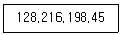
- A class
- B class
- C class
- D class
(정답률: 78%)
86. 컴퓨터 네트워크의 라우팅 알고리즘의 하나로서 수신되는 링크를 제외한 나머지 모든 링크로 패킷을 단순하게 복사 전송하는 것을 무엇이라고 하는가?
- Flooding
- Filtering
- Forwarding
- Listerning
(정답률: 73%)
87. 데이터 전환 프로세스를 순서대로 맞게 나열한 것은?
- 데이터전환계획 및 요건정의 -데이터전환 설계 - 데이터전환 개발 - 데이터 전화 테스트 및 검증 - 데이터전환
- 데이터전환계획 및 요건정의 -데이터전환 설계 - 데이터전환 개발 - 데이터전환 - 데이터 전화 테스트 및 검증
- 데이터전환 설계 - 데이터전환계획 및 요건정의 - 데이터전환 개발 - 데이터전환 - 데이터 전화 테스트 및 검증
- 데이터전환 설계 - 데이터전환계획 및 요건정의 - 데이터전환 개발 - 데이터 전화 테스트 및 검증 - 데이터전환
(정답률: 73%)
88. 10진수 43과 이진수 10010011의 논리합(OR)를 맞게 변환한 값은?
- 10111011
- 10111000
- 10111110
- 10111111
(정답률: 78%)
89. 개인의 컴퓨터나 기업의 응용서버등의 컴퓨터 데이터를 별도 장소로 옮겨 놓고 네트워크을 연결하여 인터넷 접속이 가능한 다양한 단말기를 통해 언제 어디서나 데이터를 이용할 수 있는 사용자 환경은?
- 클라우드 컴퓨팅
- 빅데이터 컴퓨팅
- 유비쿼터스 컴퓨팅
- 사물인터넷 컴뷰팅
(정답률: 81%)
90. 사용자가 서비스 제공자로부터 개발할 수 있는 환경을 제공받고, 개발이 완료된 어플리케이션을 제3의 사용자에게 제공 할 수 있는 서비스는 무엇인가?
- PaaS
- Saas
- IaaS
- NaaS
(정답률: 59%)
91. 전파법에서 위임된 사항과 그 시행에 필요한 사항을 규정한 것은 어느 것인가?
- 무선설비규칙
- 전파법 시행령
- 위임전결에 대한 규칙
- 방송통신기기 시험기관의 지정 및 관리에 관한 고시
(정답률: 86%)
92. “안테나 공급전력에 주어진 방향에서의 반파다이폴의 상대이득을 곱한 것”으로 정의되는 것은?
- 규격전력
- 실효복사전력
- 첨두포락선전력
- 등가등방복사전력
(정답률: 63%)
93. 다음 중 특정한 주파수의 용도를 정하는 것으로 정의되는 것은?
- 주파수분배
- 주파수할당
- 주파수지정
- 주파수재배치
(정답률: 65%)
94. 다음 중 무선국 허가증의 기재사항이 아닌것은?
- 허가 연월일 및 허가번호
- 무선종사자의 성명
- 무선국의 목적
- 무선국의 준공기한
(정답률: 69%)
95. 주파수 할당을 받은 자가 전기통신역무 등을 제공하기 위하여 개설하는 무선국으로 신고하고 개설 할 수 있는 무선국에 포함되지 않은 것은?
- 이동통신
- 서비스 제공지역이 전국이 아닌 주파수공용 통신
- 무선데이터 통신
- 휴대인터넷
(정답률: 73%)
96. 자연환경 보호 등을 위하여 시설자에게 무선국의 무선설비 중 공동으로 사용하게 할 수 있는 대상설비가 아닌 것은?
- 무선국의 안테나 설치대
- 송신설비
- 수신설비
- 전원설비
(정답률: 78%)
97. 다음 문장의 괄호 안에 들어갈 내용으로 가장 적합한 것은?
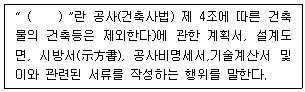
- 용역
- 발주
- 도급
- 설계
(정답률: 63%)
98. 다음 문장의 괄호 안에 들어갈 내용으로 가장 적합한 것은?
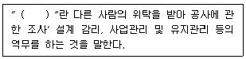
- 용역
- 도급
- 하도급
- 수급
(정답률: 86%)
99. 무선설비의 주요 기자재를 검수하는 방법 중 시험에 의한 방법의 검수 내용으로 틀린 것은?
- 검수방법은 감리사가 입회하여 재료제작자의 시험설비나 공장시험장에서 시험을 실시하고 그 결과를 얻은 성적표로 검수한다.
- 감리사가 공공시험기관에 시험을 의뢰 요청하여 실시하고 그 시험 성적 결과에 의하여 검수한다.
- 규격을 증명하는 KS 등의 마크가 표시되어 있는 규격품이나 적절하다고 인정할 수 있는 품질증명이 첨부되어 있는 제품을 대상으로 한다.
- 대상 기자재의 범위는 공사상 중요한 기자재 또는 특별 주문품, 신제품 등으로ㅆ 품질 성능을 판정할 필요가 있는 기자재로 한다.
(정답률: 81%)
100. 적합성평가의 취소처분을 받은 자는 취소처분을 받은 날로부터 얼마의 범위에서 해당 기자재에 대한 적합성평가를 받을 수 없는가?
- 6개월
- 1년
- 1년 6개월
- 2년
(정답률: 82%)